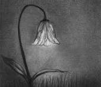

Bienvenido a mi sitio un lugar especializada en conocer los dibujos a grafito utilizando la escala de grises
El dibujo a lapiz es una tecnica artistica que utiliza grafito para crear diferentes imagenes con solo diferentes presiones y tipos de lapices,
se logran desde lineas suaves hasta sombras mas profundas creando realismo y volumen usando unicamente la escala de grises
Elegi este tema por que me gusta este tipo de arte ya que permite expresarnos con sencilles y detalle
Tambien por que es un arte muy bonito que no lleva mucha practica y que todos podemos realizar

Cuando miras un dibujo a escala de grises hiperrealista, tu cerebro rellena los espacios en blanco
El cerebro humano está tan acostumbrado a ver el mundo a color que, ante un dibujo en blanco y negro con el contraste correcto,
asume e imagina los colores reales de la piel, la ropa o los objetos, basándose únicamente en la intensidad de la luz
El lápiz de grafito es la herramienta rey de la escala de grises. Aunque deja un rastro gris oscuro o negro,
el grafito es una forma de carbono puro, estructuralmente idéntico al diamante. De hecho, los científicos han encontrado trazas de grafito en meteoritos,
lo que significa que cuando dibujas a escala de grises, técnicamente estás usando un material con orígenes cósmicos
Elegimos este tema por que me gusta el arte, ademas considero esta tecnica como una de las mas sencillas y faciles de usar
Ademas me gusta por que su inicio casi siempre son solo sombras que a medida que les bamos dando forma se va armando la obra de arte
Es una tecnica que nos sirve para todo como para dibujos simples hasta acabados mas realistas